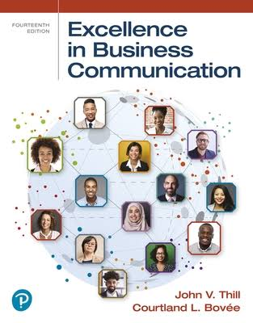

Excellence in Business Communication

Grounded in Research, Focus on Results
Excellence in Business Communication, 14th Edition, is more than just a textbook; it's a comprehensive learning system designed to develop well-rounded, effective business communicators. By incorporating research-based principles from diverse fields, it creates an engaging, practical, and relevant learning experience that prepares students for the complex communication challenges of the modern business world.